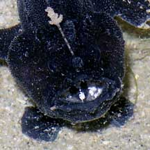
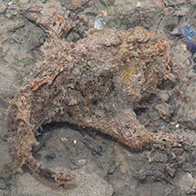
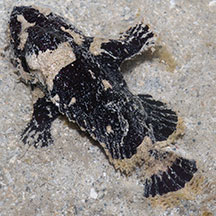

|
|
| fishes text index | photo index |
| Phylum Chordata > Subphylum Vertebrate > fishes |
| Frogfishes Family Antennariidae updated Sep 2020
Where seen? These rotund fishes are sometimes seen on some of our shores. They are probably quite common and often simply overlooked as they are extremely well camouflaged. What are frogfishes? Frogfishes belong to the Family Antennariidae. According to FishBase, the family has 12 genera and 41 species. These fishes were previously called anglerfishes, a much more appropriate name for these ambush predators. But anglerfish is now a common name reserved for deep sea fishes that also use a lure to attract prey within their reach. Features: Those seen about 6-10cm long, can grow to 18cm. The frogfish has a globular body that can expand greatly. A handy feature that allows the fish to swallow prey as large as itself. Not a fast swimmer, the frogfish usually lies motionless near coral rubble, blending perfectly with its surroundings. Here it waits to ambush passing prey. It doesn't have scales and instead, has a loose prickly skin. Covered with filaments and fleshy bits, it looks just like an algae-covered rock. The frogfish has tube-like gill openings under the base of its pectoral fins. This prevents exhalations from betraying its presence. It is said that the openings can also be used for jet-propelling. Its eyes are at the top of its head. Gill openings are reduced to small round holes. Frogfishes come in a wide variety of colours and patterns. Some species are brightly coloured to mimic sponges or other colourful reef creatures. According to Kuiter, the young of some species of frogfishes sometimes look like poisonous nudibranchs. Sometimes mistaken for stonefish and scorpionfish. Unlike those fishes, the frogfish is harmless. Here's more on how to tell apart fishes that look like stones. |
 Changi, Jun 08 |
 A lure that draws prey closer to the mouth |
 Lure and bright markings in the mouth. Sisters Island, Aug 07 |
| Fishing
with a lure: The
frogfish literally lures prey to come closer. The lure is at the top
of its head, just above its very large, upward facing mouth.The lure
is made up of the first spine of the dorsal fin. The spine is modified
into a rod or stalk (called the illicium) tipped with a fleshy, fluffy
or otherwise attractive bit (called the esca). This bit is wriggled,
jerked and waved about so it appears to be a helpless and tasty little
morsel. While the fish itself remains motionless, looking like just
another lump of rock or other harmless thing. Unsuspecting creatures
that attempt to eat the lure are instead eaten by the frogfish! Each
frogfish species usually targets a specific prey and each species
has a lure that resembles something the targeted prey would find tasty.
When not in use, the lure is safely flattened against the head. The victim is usually swallowed whole in one gulp of the frogfish's huge mouth. The frogfish can hugely expand its mouth in less than a second, making it among the fastest capture in the animal kingdom. What do they eat: Frogfishes generally eat other fishes although some temperate species eat crustaceans. They may even eat other frogfishes, including their potential mates! |
 'Climbing' on long seagrass with its 'paws'. Pulau Semakau, Apr 11 |
 Tuas, Aug 04 |
 Pulau Semakau, Sep 05 |
| Fish with arms?! The frogfish
has another unusual feature: limb-like pectoral fins with an elbow-like
joint. These look almost like 'paws'. It uses these fins almost like
arms and hands, to grip the surface and 'walk' slowly about (more
of a waddle actually). It also has clasping pectoral fins under its
body. Frogfish babies: A frogfish mother lays thousands of eggs embedded in a large floating gelatinous mass called an 'egg raft' or 'veil'. Lophiocharon species are known to brood and care for their eggs. It is believed that the female lays eggs directly onto the side of the male, the eggs attached by sticky threads. The father then look after the eggs by curling his body around the eggs, and folding his dorsal, caudal and pectoral fins over the egg mass to partially conceal them. One spotted-tail frogfish was seen to do that. According to FishBase the father fish carries egg clusters attached to the side of his body, "either as brooding strategy or as aid in luring other fish for food". Motionless, his eggs will indeed look like a tasty snack on a stone. Any potential egg-snackers will of course be in danger of becoming a snack for papa frogfish! Unusual frogfishes: While most frogfishes are bottom-dwelling, one species (Histrio sp.) floats among sargassum seaweed. Another species, the Brackishwater frogfish (Antennarius biocellatus) inhabits brackish and even totally freshwater habitats. |
| Some Frogfishes on Singapore shores |
| Family
Antennariidae recorded for Singapore from Wee Y.C. and Peter K. L. Ng. 1994. A First Look at Biodiversity in Singapore. *Lim, Kelvin K. P. & Jeffrey K. Y. Low, 1998. A Guide to the Common Marine Fishes of Singapore. **from WORMS +Other additions (Singapore Biodiversity Records, etc)
|
Links
|